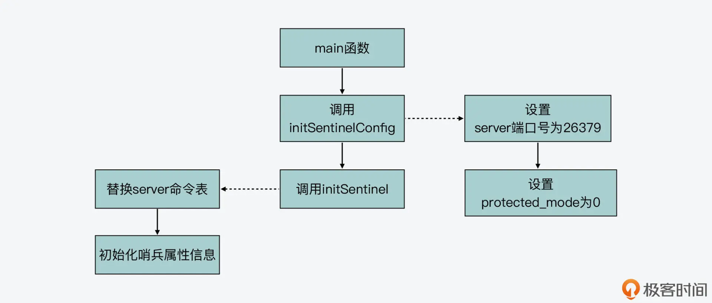
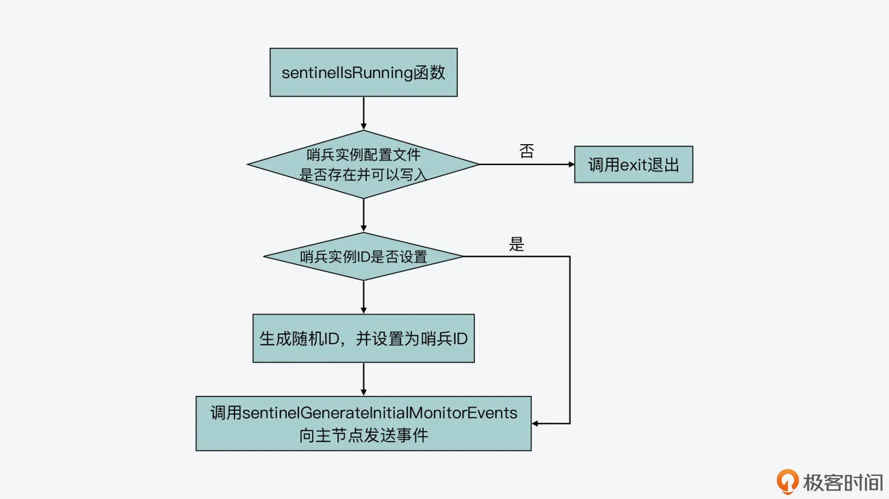
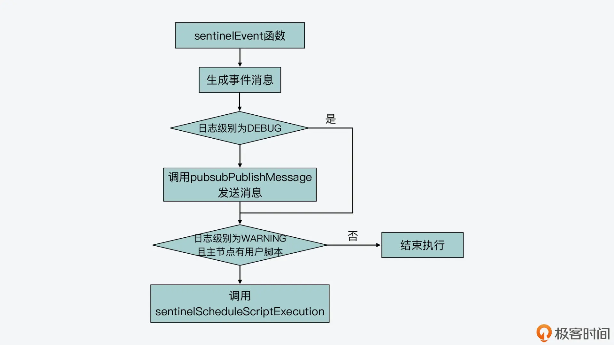

- 00 开篇词 阅读Redis源码能给你带来什么？.md
- 01 带你快速攻略Redis源码的整体架构.md
- 02 键值对中字符串的实现，用char还是结构体？.md
- 03 如何实现一个性能优异的Hash表？.md
- 04 内存友好的数据结构该如何细化设计？.md
- 05 有序集合为何能同时支持点查询和范围查询？.md
- 06 从ziplist到quicklist，再到listpack的启发.md
- 07 为什么Stream使用了Radix Tree？.md
- 08 Redis server启动后会做哪些操作？.md
- 09 Redis事件驱动框架（上）：何时使用select、poll、epoll？.md
- 10 Redis事件驱动框架（中）：Redis实现了Reactor模型吗？.md
- 11 Redis事件驱动框架（下）：Redis有哪些事件？.md
- 12 Redis真的是单线程吗？.md
- 13 Redis 6.0多IO线程的效率提高了吗？.md
- 14 从代码实现看分布式锁的原子性保证.md
- 15 为什么LRU算法原理和代码实现不一样？.md
- 16 LFU算法和其他算法相比有优势吗？.md
- 17 Lazy Free会影响缓存替换吗？.md
- 18 如何生成和解读RDB文件？.md
- 19 AOF重写（上）：触发时机与重写的影响.md
- 20 AOF重写（下）：重写时的新写操作记录在哪里？.md
- 21 主从复制：基于状态机的设计与实现.md
- 22 哨兵也和Redis实例一样初始化吗？.md
- 23 从哨兵Leader选举学习Raft协议实现（上）.md
- 24 从哨兵Leader选举学习Raft协议实现（下）.md
- 25 PubSub在主从故障切换时是如何发挥作用的？.md
- 26 从Ping-Pong消息学习Gossip协议的实现.md
- 27 从MOVED、ASK看集群节点如何处理命令？.md
- 28 Redis Cluster数据迁移会阻塞吗？.md
- 29 如何正确实现循环缓冲区？.md
- 30 如何在系统中实现延迟监控？.md
- 31 从Module的实现学习动态扩展功能.md
- 32 如何在一个系统中实现单元测试？.md
- 结束语 Redis源码阅读，让我们从新开始.md
22 哨兵也和Redis实例一样初始化吗？
这节课，我们一起来看看 Redis 是如何在源码中实现哨兵机制的。
我们知道，Redis 主从复制是保证 Redis 可用性的一个重要手段。而一旦 Redis 主节点发生故障，哨兵机制就会执行故障切换。这个故障切换过程实现起来其实比较复杂，涉及了哨兵 Leader 选举、新主节点选举和故障切换等关键操作。但同时，这个故障切换过程又是我们在实现高可用系统时经常要面对的开发需求。
所以从这节课开始，我就来给你逐一介绍下，Redis 哨兵机制及其实现故障切换的关键技术设计与实现。通过这部分内容的学习，你既可以了解在故障切换过程中，起到重要作用的 Raft 协议是如何实现的，而且你还可以掌握在故障切换时，主节点、从节点和客户端相互之间如何完成切换通知的。
不过，在开始了解故障切换的关键技术之前，今天我们会先来了解哨兵实例本身的初始化和基本运行过程，这是因为从源码的角度来看，哨兵实例和常规 Redis 实例的实现都是在一套源码中的，它们共享了一些执行流程。所以了解这部分内容，也可以帮助我们更加清楚地掌握哨兵实例的实现机制。
好，下面我们就先来看下哨兵实例的初始化过程。
哨兵实例的初始化
因为哨兵实例是属于运行在一种特殊模式下的 Redis server，而我在【第 8 讲】中，已经给你介绍过了 Redis server 启动后的入口函数 main 的整体执行过程。其实，这个过程就包含了哨兵实例的初始化操作。
所以，哨兵实例的初始化入口函数也是 main（在 server.c 文件中）。那么，main 函数在运行时，就会通过对运行参数的判断，来执行哨兵实例对应的运行逻辑。具体来说，main 函数在调用 initServerConfig 函数初始化各种配置项之前，会调用 checkForSentinelMode 函数，来判断当前运行的是否为哨兵实例，如下所示：
server.sentinel_mode = checkForSentinelMode(argc,argv);
checkForSentinelMode 函数（在 server.c 文件中）的参数，是 main 函数收到的启动命令字符串 argv 和启动命令中的参数个数 argc。然后，它会根据以下两个条件判断当前是否运行了哨兵实例。
- 条件一：执行的命令本身，也就是 argv[0]，是否为“redis-sentinel”。
- 条件二：执行的命令参数中，是否有“–sentinel”。
这部分代码如下所示：
int checkForSentinelMode(int argc, char **argv) {
int j
//第一个判断条件，判断执行命令本身是否为redis-sentinel
if (strstr(argv[0],"redis-sentinel") != NULL) return 1;
for (j = 1; j < argc; j++)
//第二个判断条件，判断命令参数是否有"--sentienl"
if (!strcmp(argv[j],"--sentinel")) return 1;
return 0;
}
其实，这两个判断条件也就对应了我们在命令行启动哨兵实例的两种方式，一种是直接运行 redis-sentinel 命令，另一种是运行 redis-server 命令，但是带有“–sentinel”参数，如下所示：
redis-sentinel sentinel.conf文件路径
或者
redis-server sentinel.conf文件路径—sentinel
所以，如果这两个条件中有一个成立，那么全局变量 server 的成员变量 sentinel_mode，就会被设置为 1，表明当前运行的是哨兵实例。这样一来，server.sentinel_mode 这一配置项就会在源码的其他地方，被用来判断当前是否运行的是哨兵实例。
初始化配置项
好，在完成了对哨兵实例的运行判断之后，接下来，main 函数还是会调用 initServerConfig 函数初始化各种配置项。但是，因为哨兵实例运行时所用的配置项和 Redis 实例是有区别的，所以，main 函数会专门调用 initSentinelConfig 和 initSentinel 两个函数，来完成哨兵实例专门的配置项初始化，如下所示：
if (server.sentinel_mode) {
initSentinelConfig();
initSentinel();
}
initSentinelConfig 和 initSentinel 这两个函数都是在sentinel.c文件中实现的。
其中，initSentinelConfig 函数主要是将当前 server 的端口号，改为哨兵实例专用的端口号 REDIS_SENTINEL_PORT。这是个宏定义，它对应的默认值是 26379。另外，这个函数还会把 server 的 protected_mode 设置为 0，即允许外部连接哨兵实例，而不是只能通过 127.0.0.1 本地连接 server。
而 initSentinel 函数则是在 initSentinelConfig 函数的基础上，进一步完成哨兵实例的初始化，这其中主要包括两部分工作。
- 首先，initSentinel 函数会替换 server 能执行的命令表。
在 initServerConfig 函数执行的时候，Redis server 会初始化一个执行命令表，并保存在全局变量 server 的 commands 成员变量中。这个命令表本身是一个哈希表，每个哈希项的键对应了一个命令的名称，而值对应了该命令实际的实现函数。
因为哨兵实例是运行在特殊模式的 Redis server，它执行的命令和 Redis 实例也是有区别的，所以 initSentinel 函数会把 server.commands 对应的命令表清空，然后在其中添加哨兵对应的命令，如下所示：
dictEmpty(server.commands,NULL);
for (j = 0; j < sizeof(sentinelcmds)/sizeof(sentinelcmds[0]); j++) {
…
struct redisCommand *cmd = sentinelcmds+j;
retval = dictAdd(server.commands, sdsnew(cmd->name), cmd);
…
}
从这里的代码中你可以看到，哨兵实例可以执行的命令保存在了 sentinelcmds 数组中，这个数组是在 sentinel.c 文件中定义的。
其中你需要注意的是，哨兵实例执行的一些命令，其名称虽然和 Redis 实例命令表中的命令名称一样，但它们的实现函数是针对哨兵实例专门实现的。比如，哨兵实例和 Redis 实例都可以执行 publish、info、role 命令，但是在哨兵实例中，这三个命令分别由 sentinelPublishCommand、sentinelInfoCommand、sentinelRoleCommand 这三个在 sentinel.c 文件中的函数来实现的。所以，当你需要详细了解哨兵实例运行命令的实现时，注意不要找错代码文件。
以下代码也展示了哨兵实例命令表中的部分命令，你可以看看。
struct redisCommand sentinelcmds[] = {
{"ping",pingCommand,1,"",0,NULL,0,0,0,0,0},
{"sentinel",sentinelCommand,-2,"",0,NULL,0,0,0,0,0},
…
{"publish",sentinelPublishCommand,3,"",0,NULL,0,0,0,0,0},
{"info",sentinelInfoCommand,-1,"",0,NULL,0,0,0,0,0},
{"role",sentinelRoleCommand,1,"l",0,NULL,0,0,0,0,0},
…
};
- 其次，initSentinel 函数在替换了命令表后，紧接着它会开始初始化哨兵实例用到的各种属性信息。
为了保存这些属性信息，哨兵实例定义了 sentinelState 结构体（在 sentinel.c 文件中），这其中包括了哨兵实例的 ID、用于故障切换的当前纪元、监听的主节点、正在执行的脚本数量，以及与其他哨兵实例发送的 IP 和端口号等信息。下面的代码就展示了 sentinelState 结构体定义中的部分属性，你可以看下。
struct sentinelState {
char myid[CONFIG_RUN_ID_SIZE+1]; //哨兵实例ID
uint64_t current_epoch; //当前纪元
dict *masters; //监听的主节点的哈希表
int tilt; //是否处于TILT模式
int running_scripts; //运行的脚本个数
mstime_t tilt_start_time; //tilt模式的起始时间
mstime_t previous_time; //上一次执行时间处理函数的时间
list *scripts_queue; //用于保存脚本的队列
char *announce_ip; //向其他哨兵实例发送的IP信息
int announce_port; //向其他哨兵实例发送的端口号
…
} sentinel;
这样一来，initSentinel 函数就主要会把这些属性设置为初始化值。比如，它会为监听的主节点创建一个哈希表，哈希项的键记录了主节点的名称，而值记录了对应的数据结构指针。
到这里，哨兵实例配置项的初始化工作就完成了。下图展示了这个初始化过程，你可以再回顾下。

接下来，main 函数还会调用 initServer 函数完成 server 本身的初始化操作，这部分哨兵实例也是会执行的。然后，main 函数就会调用 sentinelIsRunning 函数（在 sentinel.c 文件中）启动哨兵实例。
启动哨兵实例
sentinelIsRunning 函数的执行逻辑比较简单，它首先会确认哨兵实例的配置文件存在并且可以正常写入。然后，它会检查哨兵实例是否设置了 ID。如果没有设置 ID 的话，sentinelIsRunning 函数就会为哨兵实例随机生成一个 ID。
最后，sentinelIsRunning 函数会调用 sentinelGenerateInitialMonitorEvents 函数（在 sentinel.c 文件中），给每个被监听的主节点发送事件信息。下图展示了 sentinelIsRunning 函数的基本执行流程，你可以看下。

那么，sentinelIsRunning 函数是如何获取到主节点的地址信息呢？
这就和我刚才给你介绍的 initSentinel 函数有关了，它会初始化哨兵实例的数据结构 sentinel.masters。这个结构是使用了一个哈希表记录监听的主节点，每个主节点会使用 sentinelRedisInstance 结构来保存。而在 sentinelRedisInstance 结构中，就包含了被监听主节点的地址信息。这个地址信息是由 sentienlAddr 结构体保存的，其中包括了节点的 IP 和端口号，如下所示：
typedef struct sentinelAddr {
char *ip;
int port;
} sentinelAddr;
此外，sentinelRedisInstance 结构中还包括了一些和主节点、故障切换相关的其他信息，比如主节点名称、ID、监听同一个主节点的其他哨兵实例、主节点的从节点、主节点主观下线和客观下线的时长，等等。以下代码展示了 sentinelRedisInstance 结构的部分内容，你可以看看。
typedef struct sentinelRedisInstance {
int flags; //实例类型、状态的标记
char *name; //实例名称
char *runid; //实例ID
uint64_t config_epoch; //配置的纪元
sentinelAddr *addr; //实例地址信息
...
mstime_t s_down_since_time; //主观下线的时长
mstime_t o_down_since_time; //客观下线的时长
...
dict *sentinels; //监听同一个主节点的其他哨兵实例
dict *slaves; //主节点的从节点
...
}
这里，你需要注意下，sentinelRedisInstance 是一个通用的结构体，它不仅可以表示主节点，也可以表示从节点或者其他的哨兵实例。
这个结构体的成员变量有一个 flags，它可以设置为不同的值，从而表示不同类型的实例。比如，当 flags 设置为 SRI_MASTER、SRI_SLAVE 或 SRI_SENTINEL 这三种宏定义（在 sentinel.c 文件中）时，就分别表示当前实例是主节点、从节点或其他哨兵。你在阅读哨兵相关的源码时，可以看到代码中会对 flags 进行判断，获得当前实例类型，然后再执行相应的代码逻辑。
好了，到这里，你就知道当哨兵要和被监听的主节点通信时，它只需要从 sentinel.masters 结构中获取主节点对应的 sentinelRedisInstance 实例，然后就可以给主节点发送消息了。
这个 sentinelGenerateInitialMonitorEvents 函数的执行逻辑，你可以参考以下代码：
void sentinelGenerateInitialMonitorEvents(void) {
dictIterator *di;
dictEntry *de;
di = dictGetIterator(sentinel.masters);//获取masters的迭代器
while((de = dictNext(di)) != NULL) { //获取被监听的主节点
sentinelRedisInstance *ri = dictGetVal(de);
sentinelEvent(LL_WARNING,"+monitor",ri,"%@ quorum %d",ri->quorum); //发送+monitor事件
}
dictReleaseIterator(di);
}
从代码中，你可以看到，sentinelGenerateInitialMonitorEvents 函数是调用 sentinelEvent 函数（在 sentinel.c 文件中）来实际发送事件信息的。
sentinelEvent 函数的原型定义如下，它的参数 level 表示当前的日志级别，type 表示发送事件信息所用的订阅频道，ri 表示对应交互的主节点，fmt 则表示发送的消息内容。
void sentinelEvent(int level, char *type, sentinelRedisInstance *ri, const char *fmt, ...)
那么，sentinelEvent 函数会先判断传入的消息内容开头的两个字符，是否为“%”和“@”，如果是的话，它就会判断监听实例的类型是否为主节点。然后如果是主节点，sentinelEvent 函数会把监听实例的名称、IP 和端口号加入到待发送的消息中，如下所示：
...
//如果传递消息以"%"和"@"开头，就判断实例是否为主节点
if (fmt[0] == '%' && fmt[1] == '@') {
//判断实例的flags标签是否为SRI_MASTER，如果是，就表明实例是主节点
sentinelRedisInstance *master = (ri->flags & SRI_MASTER) ?
NULL : ri->master;
//如果当前实例是主节点，根据实例的名称、IP地址、端口号等信息调用snprintf生成传递的消息msg
if (master) {
snprintf(msg, sizeof(msg), "%s %s %s %d @ %s %s %d", sentinelRedisInstanceTypeStr(ri), ri->name, ri->addr->ip, ri->addr->port,
master->name, master->addr->ip, master->addr->port);
}
...
}
...
然后，sentinelEvent 函数会把传入的消息中，除了开头两个字符以外的剩余内容加入到待发送的消息中。最后，sentinelEvent 函数会调用 pubsubPublishMessage 函数（在 pubsub.c 文件中），将消息发送到对应的频道中，如下所示：
if (level != LL_DEBUG) {
channel = createStringObject(type,strlen(type));
payload = createStringObject(msg,strlen(msg));
pubsubPublishMessage(channel,payload);
...
}
另外这里你要注意一点，刚才我介绍的 sentinelGenerateInitialMonitorEvents 函数，它给 sentinelEvent 函数发送的参数 type 是“+monitor”，这就表明它会将事件信息发到”+monitor”频道上。
下面的图展示了 sentinelEvent 函数的执行流程，你可以再回顾下。

好了，到这里，哨兵实例的初始化就基本完成了。接下来，哨兵就会和主节点进行通信，监听主节点的状态变化，我会在接下来的课程中给你具体介绍它们之间的通信过程。
小结
今天这节课，我给你介绍了哨兵实例的初始化过程。哨兵实例和 Redis 实例使用的是相同的入口 main 函数，但是由于哨兵实例在运行时使用的配置项、运行时信息、支持的可执行命令、事件处理和 Redis 实例又有所区别。
所以，main 函数会先通过 checkForSentinelMode 函数来判断当前运行是否为哨兵实例，并相应地设置全局配置项 server.sentinel_mode，这个配置项就会在源码其他地方被用于标识哨兵实例是否运行。
这样，当启动的是哨兵实例时，main 函数会调用 initSentinelConfig、initSentinel 函数来完成哨兵实例的初始化，然后，main 函数会调用 sentinelIsRunning 函数，来向被监听的主节点发送事件信息，从而开始监听主节点。
最后，我也想再提醒你一下，从今天这节课的内容中，我们可以看到哨兵实例在运行后，开始使用 Pub/Sub 订阅频道模式的通信方法，这种通信方法通常适用于多对多的通信场景中。
因为哨兵实例除了和主节点通信外，还需要和其他哨兵实例、客户端进行通信，而采用 Pub/Sub 通信方法，可以高效地完成这些通信过程。我在接下来的课程中还会给你介绍 Pub/Sub 通信方法在哨兵运行过程中的使用，也希望你在学完这部分课程内容之后，能够掌握这种通信方法的实现。
每课一问
哨兵实例本身是有配置文件 sentinel.conf 的，那么你能在哨兵实例的初始化过程中，找到解析这个配置文件的函数吗？
© 2019 - 2023 Liangliang Lee. Powered by gin and hexo-theme-book.